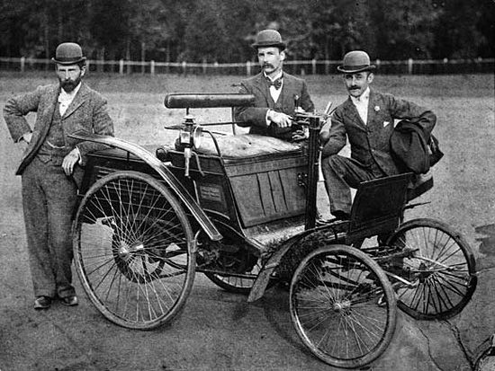
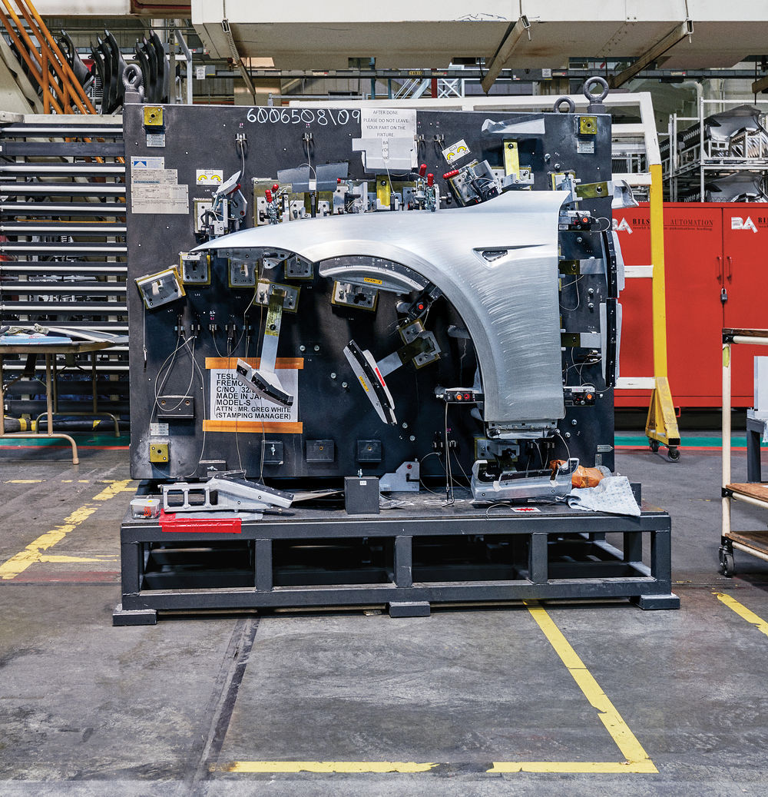

Історія створення авто
-Історія першого автомобіля почалася в 1768 році разом зі створенням паросилових машин, здатних перевозити людину.
-Перший прообраз автомобіля був побудований як іграшка для китайського імператора членом єзуїтської громади в Китаї, Фердинандом Вербіст в 1672 році. Парова візок могла рухатися на одній заправці вугілля більше години. В описі своєї іграшки Вербіст вперше згадав термін «мотор» в його нинішньому значенні.
Перші відомі спроби створення ДВС -У 1791 році Джон Барбер винайшов газову турбіну. У 1794 році Томас Мід запатентував газовий двигун. -У 1807 році французький інженер Нисефор Ньєпс запустив експериментальний твердопаливний двигун внутрішнього згоряння, який використовував як паливо подрібнений в порошок піреолофор.
-Работоспособний бензиновий двигун з'явився лише десятьма роками пізніше. Винахідником його був німецький інженер Готліб Даймлер. Багато років він працював у фірмі Отто і був членом її правління.
-В початку 80-х років він запропонував своєму шефу проект компактного бензинового двигуна, який можна було б використовувати на транспорті. Отто поставився до пропозиції Даймлера холодно. Тоді Даймлер разом зі своїм другом Вільгельмом Майбахом прийняв сміливе рішення - в 1882 році вони пішли з фірми Отто, придбали невелику майстерню поблизу Штутгарта і почали працювати над своїм проектом.
Розвиток автоіндустрії
Проблема, що стояла перед Даймлером і Майбахом, була не з легких: вони вирішили створити двигун, який не вимагав би газогенератора, був би дуже легким і компактним, але при цьому досить потужним, щоб рухати екіпаж. Збільшення потужності Даймлер розраховував отримати за рахунок збільшення частоти обертання валу, але для цього необхідно було забезпечити необхідну частоту запалення суміші. У 1883 році був створений перший калильним бензиновий двигун з запалюванням від розпеченої трубочки, що вставляється в циліндр. Перша модель бензинового двигуна призначалася для промислової стаціонарної установки.
-У 1930-х роках автомобілебудування індустріального типу було створено в СРСР.
- У 1950-х японська фірма Toyota застосувала засновану на Кайдзен систему гнучкої організації виробництва і підвищення якості, відому як «метод Тойоти».
-З середини 1970-х широкого поширення набули верстати з автоматичним управлінням (ЧПУ) і автоматизовані виробничі лінії (особливо на шкідливих і відповідальних ділянках) з промисловими роботами-маніпуляторами.
-В початку 1980-х Японія відібрала звання світового лідера автомобілебудування у США, а в середині 1980-х почався інтенсивний розвиток автовиробництва в Південній Кореї.